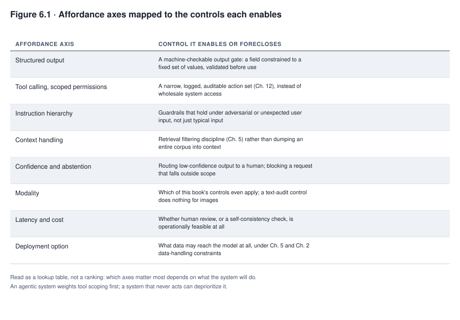
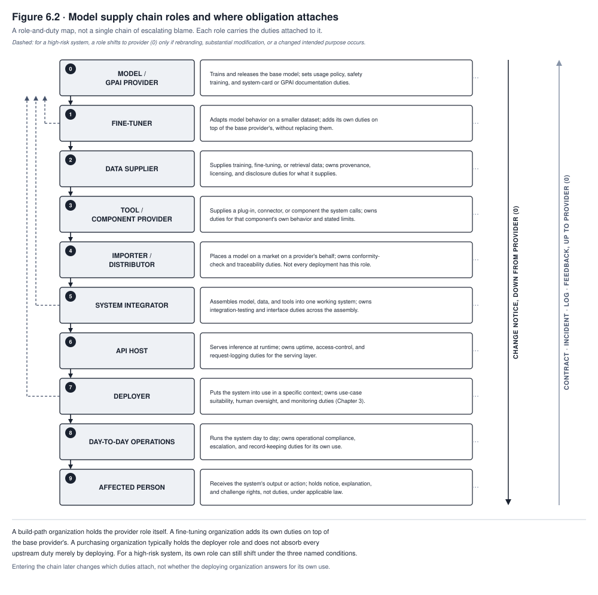

6. Model Selection and Development
Meridian Financial’s model risk function had governed FAIRLEND’s original credit model for a decade. The model was a scorecard, a logistic regression over a small set of engineered variables. Every coefficient in it could be explained to an examiner in one sentence, stating how much weight it carried, in which direction, and why. When the data science team proposed replacing it with a gradient-boosted ensemble trained on a much larger feature set, the performance case was not close. The new model separated good loans from bad loans measurably better, on the bank’s own validation data, than the scorecard ever had. The model risk function approved the replacement. Only after deployment did anyone outside the data science team try to answer a question the approval process had not asked clearly enough. When an applicant asks why they were declined, what does the bank now say, and is that answer one it can defend to a regulator whose statute requires a specific reason and not a probability score.
Nothing about this is a story about a worse model. The ensemble was better at the thing it was measured on. The choice Meridian made was a choice between two goods that do not come bundled together, predictive accuracy and the kind of explanation an adverse-action notice requires. The decision to trade one for the other was made, functionally, by whoever picked the modeling approach, not by whoever was accountable for defending the bank’s lending decisions. This chapter is about that class of decision. Selecting or building a model is not a preliminary step before governance starts. It is itself a governance decision, and often the one that forecloses the most options. That is because most of what a system can be made to do, and most of what can later be demanded of it, is set at this layer before anything else about the system exists.
What you will be able to do
- Compare candidate models along dimensions that determine what controls will be available later, instead of by accuracy alone
- Explain what an organization inherits, and cannot amend, when it builds a system on a model it did not train
- Read a system card adversarially, focusing on what it omits, what a vague section signals, and what questions a thin card should generate before selection
- Distinguish where legal and governance obligation attaches across the build, fine-tune, and purchase paths
- Specify what a model bill of materials records and why an organization that cannot produce one cannot investigate its own system
6.1 Build, fine-tune, or select
Three nested lifecycles run underneath every AI system, at different cadences and under different ownership, and this chapter concerns the fastest-moving and least visible of the three. The use case layer is the business process being served, hiring, lending, clinical triage, and it outlives everything built to serve it. The system layer is what Part II of this book governs. It covers the scoping, design, integration, deployment, operation, and retirement of a working system, which typically contains one or more models together with retrieval, tools, interfaces, and guardrails around them. The model layer is narrower still. A model is trained, validated, versioned, retrained, and eventually deprecated, on its own schedule. One model can serve several systems, and one system can swap the model underneath it without changing what the system does from a user’s point of view. Keeping the three layers distinct matters because a decision made at the model layer, such as which base model a system is built on, can constrain the system layer for years without anyone at the system layer having made a choice at all.
Most organizations reading this chapter are not going to train a model from scratch, and a chapter that treats scratch training as the default case would misdescribe the decision most of its readers actually face. Three paths exist, and they differ sharply in what they afford and what they foreclose.
Building from scratch means training a model on data the organization controls. This approach carries a real cost in data, compute, and specialized skill, and increasingly few organizations undertake it for a general capability. It remains common, though, for narrow, well-specified predictive tasks, where a purpose-built model outperforms a general one and the organization has the historical data to train it. FAIRLEND’s original scorecard, and the ensemble that replaced it, both sit on this path. Full visibility into training data and the resulting model is the payoff, and full accountability for what the training data taught the model is the corresponding cost.
Fine-tuning means adapting a model someone else trained, adjusting its behavior toward a narrower task using a much smaller dataset than the base model required. This path inherits the base model’s properties wholesale, including properties the fine-tuning organization did not choose and frequently cannot fully inspect. A model fine-tuned to draft clinical documentation still carries whatever the base model learned during its original training, on data the fine-tuning organization never saw and cannot audit. Fine-tuning does not remove that inheritance so much as it adds a thin, task-specific layer on top of it. Section 6.3 develops exactly what that inheritance consists of.
Selecting means purchasing or licensing a model as-is, with no training or fine-tuning at all, and it is the path most readers of this book will actually be on. TALENTSCREEN’s resume-screening component sits here. Calloway licensed a model the vendor trained, on data the vendor has not disclosed, and Calloway’s governance function has no purchase on the training decisions that shaped it. Selection affords the least visibility of the three paths and forecloses the most. An organization that selects a model has made, whether or not anyone framed it this way, a decision to accept another organization’s judgment about what the model should and should not do.
Where legal and governance obligation attaches differs across the three paths in ways that matter well beyond this chapter. A builder is accountable for what its training data taught the model, because it chose the data. A fine-tuner is accountable for what it added. It may also take on the base model developer’s obligations where fine-tuning triggers a change in legal role, such as rebranding the model, substantially modifying it, or changing its intended purpose. A regulation like the EU AI Act treats such a change as making the fine-tuner a provider in its own right. Fine-tuning alone does not automatically produce that shift. It depends on the specific role, system classification, market action, and modification tests the applicable regulation sets. Even when a fine-tuner does not become the legal provider, it can still carry contractual, product, or professional obligations toward the base model. That distinction surprises fine-tuning organizations who assume responsibility flows entirely to the base model’s developer regardless of what the fine-tuning changed. A purchaser is accountable for how it deploys a model it did not shape at all. That sounds like the lightest obligation of the three, until an incident occurs and the purchaser discovers that “we didn’t build it” is not a defense available to a deployer under most of the frameworks this book has already covered. Chapter 2 established that obligation attaches to what a system does, not to who trained the model inside it, and this chapter is where that principle becomes a selection criterion, not an abstraction.
6.2 Model affordances and the control surface
Whichever path is chosen, the resulting model has a specific set of behaviors it can be made to support, and a team that does not know what those are will invent a worse control than the one the model already offers. The most common worse control is a human review step layered on top of an automated output, a control automation bias will quietly hollow out over the following pages, as Chapter 1 established. The remedy is not a list of which vendor’s model does what this year, since that list is stale within months of being written. The remedy is a set of axes that persist even as which model sits where on them keeps changing, and the discipline of asking, for each axis, what control it enables or forecloses.
Constrained and structured output determines whether a model’s output can be forced into a schema a downstream system can validate mechanically, instead of parsed hopefully from free text. A model that supports structured output lets a governance function write a machine-checkable gate, a field that must be one of a fixed set of values, or a confidence score that must exceed a threshold before an action proceeds. A model without that support pushes the same check into a fragile text-parsing layer that fails silently when the model’s phrasing drifts.
Tool calling with scoped permissions determines whether a model can request an action through an interface a surrounding system can constrain, instead of acting through an interface with no such structure. The scoping itself, which specific operations are actually permitted, is enforced mainly by the deployment architecture and by identity and access management sitting around the model, not by the model. What the model contributes is whether it supports structured tool calls at all; what the deploying organization’s architecture contributes is whether those calls are actually bounded. This axis is the one Chapter 12’s agentic controls depend on most directly, and Chapter 12 is where the enforcement layer, not the model property, gets full treatment.
Instruction hierarchy describes a model’s measured tendency to weight its developer’s and its deploying system’s instructions over instructions introduced later by a user or by content the system processes, not a dependable security boundary. Research and incident reports on prompt injection show that a sufficiently constructed input can still override instructions a model was trained to prioritize. A governance function should therefore treat instruction-following strength as a behavior to test and monitor, the subject of Chapter 7’s testing discipline, not as a control it can rely on in place of an enforced permission boundary.
Context handling determines how much material a model can hold and reason over at once, and it interacts directly with retrieval corpus governance from Chapter 5. A model with a short effective context forces aggressive retrieval filtering. A model with a long one tempts a system designer into dumping an entire corpus into context and calling it complete, a temptation that reintroduces the permission-inheritance failure Chapter 5 already documented at a different layer.
Confidence and abstention signals determine whether a model can indicate, in a form the surrounding system can act on, that it is uncertain or that a request falls outside what it should answer. A model that can abstain usably gives a governance function a lever, routing low-confidence outputs to a human or blocking an out-of-scope request outright. A model that cannot, or whose confidence signal does not actually track its accuracy, leaves the surrounding system no better placed to catch its own failures than a system with no signal at all. That is worse than it sounds, because a badly calibrated confidence signal invites false trust rather than merely offering none.
Modality determines what kind of input and output a model handles, text, image, audio, and combinations of these, and it determines directly which governance controls elsewhere in this book even apply. A control built around auditing generated text does nothing for a model that also generates images.
Latency and cost determine, more than any other axis, whether human review is operationally feasible at all. A model cheap and fast enough to run three times per request supports a self-consistency check that a slow, expensive model rules out by economics before anyone considers it a governance question. A control that assumes a human can review every output before it ships has assumed away the latency and cost axis. That assumption fails quietly, in exactly the way alert fatigue failed MEDASSIST’s nursing staff in Chapter 1, the moment volume exceeds what the assumed review capacity can sustain.
Deployment options, hosted, private instance, or on-premises, determine what data may reach the model at all under the organization’s own data governance rules from Chapter 5, and under sector-specific constraints Chapter 2 has already covered. A hosted model operated by a third party may be unusable for a workload involving the most sensitive category of data an organization holds, regardless of how well it performs on every other axis. Discovering this after selection instead of before is a recurring, avoidable failure, and the fix is simply to check the axis first.

Read Figure 6.1 as a lookup table, not a ranking. No axis is more important than another in the abstract; which axes matter most depends on what the system will do. A system that never takes an action can deprioritize tool-call scoping in favor of confidence calibration. An agentic system, though, must weight tool scoping first, regardless of how well the underlying model performs elsewhere. The figure’s job is to make sure the comparison happens on these terms before selection. Otherwise a procurement decision gets made on accuracy and price alone, and the control questions surface only after the contract is signed.
6.3 What you inherit from the developer
Building a system on a model an organization did not train means inheriting a governance regulation it did not write and cannot amend. This inheritance does not resemble ordinary vendor risk, which is why procurement practices built for ordinary vendor risk keep failing to catch it. An ordinary vendor relationship involves a defined service against a defined specification, negotiated between two parties who can both amend the terms. A model developer’s governance decisions were made for a global customer base the deploying organization was never party to, and the deploying organization typically cannot negotiate them at all below a certain contract size. Procurement teams tend to discover this only after signing.
Usage policies constrain what an organization may build on top of the model at all. A use the deploying organization considers legitimate can fall outside what the developer’s policy permits. This chapter does not resolve that kind of conflict, because the resolution depends on facts specific to the use, but the conflict has to be checked before the system is built, not after a policy violation is discovered by the developer itself.
Safety training decisions determine what the model will refuse, and a refusal shaped by the developer’s judgment about global misuse risk reaches the deploying organization’s own users as the deploying organization’s behavior. A clinical documentation assistant built on a general-purpose model can refuse to discuss a topic the developer’s safety training treats as sensitive across all use cases, even where the specific clinical context makes the refusal actively unhelpful. The deploying organization’s users experience that refusal as the deploying organization declining to help them, not as a decision made months earlier by an organization they have never heard of.
Deprecation schedules force migration onto whichever timeline the developer sets, and a forced migration is not a routine software update. It is a revalidation event, because a new model version can change behavior in ways the deploying organization’s original testing never covered. Chapter 7’s testing discipline applies to a forced migration with the same weight it applies to an initial deployment. An organization that budgets a model migration as a configuration change instead of a revalidation event has under-budgeted it in a way that surfaces at the worst possible time, immediately after the old version stops being supported.
Data retention and training-use terms determine whether an organization’s regulated data may touch the interface at all, and these terms differ across a single developer’s own pricing tiers in ways that are easy to miss. An enterprise agreement may disclaim training use of submitted data where a consumer-tier agreement for the same underlying model does not. An organization that verifies the terms once, at initial selection, and does not re-verify them at each tier change or contract renewal, is operating on an assumption rather than a fact.
Published safety frameworks, where a developer maintains one, determine which safeguards ship with the model and which the deploying organization must add itself. A developer’s safety framework is written to manage that developer’s risk across its entire customer base, not the specific risk profile of any one deployment. That means gaps a developer’s framework leaves open are gaps the deploying organization inherits by default, unless it closes them itself.
System cards determine what the deploying organization can claim to know about the model it selected, and what a card does not say is at least as informative as what it does.

Read Figure 6.2 as a set of roles with distinct duties, not a single chain of escalating blame. A build-path organization holds the model-provider role itself and carries the duties attached to it. A fine-tuning organization adds the fine-tuner’s own duties on top of whatever the base model’s provider already owes, and takes on the provider’s duties as well only for a high-risk system where rebranding, substantial modification, or a changed intended purpose shifts that role onto it. A purchasing organization typically holds the deployer role. It governs its own use and integration of the system, and it does not absorb every upstream duty merely by deploying, though for a high-risk system its own legal role can still shift under the same conditions. Each actor remains responsible for the duties attached to its role, and entering the chain later changes which duties attach, not whether the deploying organization can be held to account for its own use.
None of the six items above is boilerplate to be accepted at signature and never revisited. Each is a governance input, to be assessed with the same rigor Chapter 16 applies to the contractual relationship generally. It should be reassessed at each material change, and documented in the record Chapter 3 requires for every system the organization operates, on the buy path no less than the build path.
6.4 Reading a system card adversarially
A system card is a developer’s own account of a model’s intended use, its training approach at whatever level of detail the developer chooses to disclose, its evaluated capabilities and limitations, and its known risks. The format traces to the model card structure Margaret Mitchell and colleagues proposed in 2018 for exactly this purpose, giving a model’s downstream users a standard place to find answers to basic questions a developer would otherwise never think to volunteer. Most developers of large general-purpose models now publish something in this tradition, whether they call it a model card or a system card.
Reading one adversarially means treating it as a document written by an interested party, because it is, and asking three questions a passive reading skips.
What does the card evaluate, and what does it not. A card that reports strong performance on a broad benchmark suite says nothing about performance on the deploying organization’s specific task unless that task resembles the benchmark closely. A card that does not state what it did not test has not thereby demonstrated it performs well on the untested cases. It has simply left the question open, in a way that looks, to an unhurried reader, like the question was answered.
What does a vague evaluation section signal. A section that describes a testing methodology in specific, checkable terms (sample sizes, evaluator qualifications where humans graded, the actual metric computed) carries more weight than a vaguer one. A section that reports only a qualitative summary of “extensive testing” is the vaguer kind, and the gap between the two is a signal about what the developer is and is not confident enough to make checkable. A thin section is not proof of a thin evaluation, but it removes the deploying organization’s ability to tell the difference, which for governance purposes amounts to the same thing.
Which claims does disclosed testing actually support. A card that reports the model resisted a red-team exercise for one category of harm supports a claim about that category and no other. A deploying organization that reads the resistance as evidence of general robustness has extended the claim past what the evidence in front of it actually covers. This book’s testing chapter treats that error as a specification failure in its own right.
A thin card, read this way, generates the deploying organization’s own pre-selection testing agenda instead of closing the question. MEDASSIST’s generative documentation assistant was selected on a general-purpose model whose card disclosed evaluation on general medical question-answering but was silent on clinical documentation specifically. That silence should have generated a testing requirement, before deployment, covering exactly the gap the card left open, rather than being treated as an absence of concern. Chapter 15 teaches the same adversarial discipline applied to a card the organization itself produces, and the coordination is deliberate. A governance function that can read a vendor’s card critically but cannot apply the same standard to its own has not actually adopted the discipline, only pointed it outward.
6.5 Architecture and its governance consequences
A system card describes a model already built on one side or another of a tradeoff its developer made before the card was ever written. Accuracy and interpretability trade against each other often enough that model selection discussions should treat the question as something to test, not something settled by assumption in either direction. For some tasks, a model simple enough that a person can trace exactly how it reached a specific output is measurably less accurate than a more complex model trained on the same data. That happens because the complex model captures interactions between variables that a simple model’s structure cannot represent at all. This is not a universal law, and it is not always the case. Work on high-stakes prediction problems has shown that interpretable models can match or approach the performance of black-box alternatives on data where the complexity a black box adds is not actually earning its keep. This means an organization cannot assume the tradeoff exists in its own case without testing for it.
The burden in this comparison belongs on complexity, not on interpretability. The case for accepting a harder-to-interpret model should be made explicitly, with evidence. That means comparing the best viable interpretable model against the proposed complex model on the intended population and the operational metrics that matter. It means stating the accuracy gain the complex model actually delivers after that comparison. And it means accepting the added complexity only when a material, reproducible benefit remains and the resulting explanation, monitoring, and recourse obligations can still be met. That case should not be assumed as the default because the more complex option scored better on the metric someone happened to compute first. FAIRLEND’s ensemble replacement scored better on the metric the data science team computed, and nobody made the affirmative case that the resulting loss of interpretability was worth it for the specific obligation, an explainable adverse-action notice, that the loss would bear on most directly. The tradeoff is not confined to the build path. A system layered around a selected model, adding retrieval, multiple chained calls, or an agentic loop with several decision points, accumulates the same complexity-versus-interpretability cost even where the underlying model itself never changes. The difficulty of tracing a specific output back to a specific cause grows with the number of components between input and output, regardless of which of those components was trained in-house.
6.6 Interpretability and post-hoc explanation
Two distinct approaches answer the question of what a model’s reasoning was, and confusing them produces a specific, recurring error worth naming precisely, mistaking an explanation that sounds right for an explanation that is right.
An intrinsically interpretable model is one whose structure is the explanation. A linear or logistic regression’s coefficients state exactly how much weight the model places on each input, in which direction, and reading them is reading the model’s actual computation, not a separate account of it. FAIRLEND’s original scorecard had this property, which is precisely what let Meridian answer an adverse-action inquiry by pointing at the coefficients themselves.
A post-hoc explanation technique, by contrast, is applied after the fact to a model whose own structure does not directly reveal its reasoning, and it produces an approximation of what drove a specific output, not a report of the model’s literal computation. SHAP, short for Shapley Additive Explanations, draws on a cooperative game theory concept. It assigns each input feature a contribution value for a specific prediction, computed by considering how the prediction changes across combinations of features present and absent. LIME, short for Local Interpretable Model-agnostic Explanations, takes a different route to a similar goal. It perturbs the input around the specific case being explained and fits a simple, interpretable model to approximate the complex model’s behavior in that local neighborhood, then reports the simple model’s coefficients as the explanation.
The distinction that matters for governance is between an explanation that is faithful and one that is merely plausible. Faithful means it accurately reflects what the model actually computed. Plausible means it sounds reasonable to the person reading it, regardless of whether it matches the model’s actual computation. LIME usually explains a local neighborhood through an interpretable surrogate fitted to perturbed inputs, so its fidelity depends on the perturbation and fitting choices made to build that surrogate; it is an approximation by construction. SHAP is a family of feature-attribution methods, and here the distinction is sharper. Some implementations approximate Shapley values, while TreeSHAP can compute them exactly, for supported tree-based models, under the value function and dependence assumptions it uses. Even an exact Shapley value, computed under a specific chosen value function, is not itself a causal account of what happened in the world. Nor is it a guarantee that the attribution matches a person’s intuitive sense of “why.” Exactness under SHAP’s own assumptions is not the same claim as faithfulness to a causal story. A reader with no independent way to check either method’s output against the model’s real computation, or against the value function’s assumptions, has no way to tell a faithful explanation from a merely plausible one by looking at it. When defending a decision to a regulator or an affected individual, treating a post-hoc explanation as equivalent to an intrinsically interpretable model’s own structure risks defending that decision with an account that was never verified to be true.
6.7 Version control and reproducibility
Whether an explanation is faithful or merely plausible can only be checked against the model that actually produced it. A model that cannot be reproduced cannot be investigated, and this is not a software-engineering nicety layered on top of governance; it is a precondition for governance to function at all once something goes wrong. Reproducibility means being able to state exactly which model version, trained on exactly which data, with exactly which configuration, produced a specific output under investigation. Where the model’s own determinism allows it, that pinned version can also be rerun to test the output directly, but many generative models will not return an identical result on rerun even from a pinned version. In that case the traceable record of version, data, and configuration, not an exact replay, is what the investigation relies on.
On the build path, this means versioning the training data, the code, and the resulting model weights together. A later question about a specific prediction can then be traced back to the exact conditions that produced it, instead of to a best guess at what the pipeline probably looked like at the time. On the selection path, where the organization did not train the model at all, the analogous discipline is pinning the specific model version in production. The organization must be able to demonstrate, for any output under review, which pinned version produced it. A developer’s silent update to a hosted model between one request and the next can change behavior in ways that make a prior investigation’s findings inapplicable to the version now running. An organization that cannot answer “which version of the model produced this output” when an incident under Chapter 10’s response discipline requires the answer has failed a governance requirement that has nothing to do with how sophisticated the model itself is.
6.8 Provenance and model bills of materials
A model bill of materials records what a model is actually made of, in enough detail that the record, not memory, can answer a later question about it. The starting minimum names the base model and its version, the specific weights in use, and the training data or the data used for any fine-tuning applied on top of a base model. It also names any adapters or fine-tuning layers added and by whom, and the software dependencies the model relies on to run. Each of these can carry its own vulnerabilities or licensing constraints, and the model’s own governance record needs to surface them instead of leaving them buried in an infrastructure team’s separate inventory. A record limited to that starting list is still incomplete. It should also carry hashes and identifiers sufficient to confirm exactly which artifact is in use, dataset versions and their own provenance, licensing terms for every component, intended and explicitly prohibited uses, and the evaluation evidence behind any performance claim. It also needs to carry the runtime environment the model depends on, upstream supplier and service dependencies, known limitations and vulnerabilities, the change history that produced the current version, and the deployment configuration it is running under. Each field should distinguish what the organization knows directly, what a supplier attests without independent verification, and what remains unavailable, since collapsing those three into a single populated-looking field misrepresents how much the organization actually knows.
This record is not a new artifact invented for this chapter. It populates the model record Chapter 3 already established as part of the organization’s system inventory, and the two connect directly. An inventory entry that names a system but cannot answer what model version underlies it, what it was fine-tuned on, or what dependencies it carries has recorded that a system exists without recording what would be needed to govern it. TALENTSCREEN’s buy-path exposure is instructive here. Calloway’s vendor controls most of the fields a full model bill of materials would contain, and Calloway’s own governance record can only state what the vendor discloses, which is frequently less than the full list above. That gap is itself a governance finding, one that belongs in Calloway’s record explicitly, not papered over by leaving the fields blank without comment. A blank field with no explanation looks, to a later reviewer, like a task nobody did rather than information nobody had.
Case in focus: two selections, two exposures
FAIRLEND and MEDASSIST · Hypothetical, following the running cases
Meridian’s data science team built the case for replacing FAIRLEND‘s scorecard on a single axis. The gradient-boosted ensemble separated good loans from bad loans more accurately than the model it would replace, measured on the bank’s own validation data. The model risk function that approved the replacement was staffed by people who understood credit risk deeply and had governed the scorecard competently for a decade. The approval process they ran checked the ensemble’s accuracy, its stability across resampled validation sets, and its consistency with the bank’s existing risk appetite. It did not include, as a named criterion with its own accountable owner, whether the bank could still produce a specific, statute-compliant reason for an adverse action once the scorecard’s coefficients were no longer the mechanism generating decisions. The gap was not caught by the model risk function, which was not the function positioned to catch it. It was also not caught by legal, which was not consulted until a post-launch review flagged declined applicants’ adverse-action notices as vaguer than the prior model had ever required them to be. The fix Meridian eventually adopted, a post-hoc explanation layer generating per-decision reason codes, produced a notice that read as specific again. Nothing in the fix confirmed the reason codes were faithful to what the ensemble actually weighed, stable across similar applicants, or adequate under legal review, the same gap section 6.6 already warns a post-hoc explanation can leave open. That notice was produced after the fact, at additional engineering cost, for a gap that section 6.5’s affirmative-burden framing would have surfaced before the model was ever put into production.
Northfield’s documentation assistant took the opposite path through the same underlying decision. The team selecting a model for it evaluated several general-purpose candidates on writing quality and cost, both reasonable criteria, and additionally pulled each candidate’s system card before selecting, a step Meridian’s process for FAIRLEND had no equivalent of. The card for the model eventually selected disclosed evaluation on general medical question-answering and was explicit about not having evaluated clinical documentation drafting specifically, instead of simply staying silent on it. Reading that disclosure adversarially, per section 6.4, the team treated it as a testing requirement, not an absence of concern. It ran its own evaluation against a set of real admission-summary drafting tasks before deployment. That testing caught two behaviors that the vendor’s own testing had never had reason to look for, an overconfident phrasing pattern on uncertain diagnoses and a tendency to omit rather than flag missing information.
The two cases were run by capable teams inside organizations that both took governance seriously. They diverged on a single point, whether the model-selection decision was treated as a governance decision in its own right, with its own accountable owner and its own named criteria beyond the metric the selecting team happened to optimize. Alternatively, it was treated as a technical choice that governance would review afterward if a problem surfaced. Section 6.1’s claim that selection forecloses options before governance has a chance to weigh in is not a hypothetical risk in either case. It is what happened at Meridian, and it is exactly what Northfield’s card-reading discipline was built to prevent from happening again.
Summary
The model layer moves faster and is governed less visibly than the system layer built around it. Most organizations reading this book will select a model instead of building one, which means most of this chapter’s weight falls on what selection inherits rather than on what training decisions require. Build, fine-tune, and select carry different visibility and different attachment of obligation, and an organization on any of the three paths needs to know which one it is on before it can know what it is accountable for.
The affordance axes, structured output, tool scoping, instruction hierarchy, context handling, confidence and abstention, modality, latency and cost, and deployment option, determine what controls a system built on a given model can support. A team unaware of the axes invents worse controls than the model already offers. Selecting a model an organization did not train means inheriting usage policies, safety training decisions, deprecation schedules, data terms, safety frameworks, and a system card, none of it boilerplate and all of it requiring the same governance rigor Chapter 16 applies to contracts generally. Reading a system card adversarially, for what it does not evaluate and what a vague section signals, turns the card into a testing agenda, not a closed question.
Architecture trades accuracy against interpretability in a way that is real, not temporary, with the burden of justification on the more complex choice. Post-hoc explanation techniques like SHAP and LIME approximate a model’s reasoning without guaranteeing the approximation is faithful to what the model actually computed, and a plausible explanation is not automatically a true one. A model that cannot be reproduced cannot be investigated. A model bill of materials is what lets a later reviewer answer what a system is actually made of, on the buy path as much as the build path, even where the honest answer is that the vendor has not disclosed it.
Evidence carried forward. This chapter’s output for the rest of the book is model, supplier, and architecture evidence. That evidence includes the model bill of materials, the system card read adversarially with its gaps named, the architecture and interpretability tradeoff actually chosen and why, and the service terms and dependencies a buy-path selection inherits. Chapter 7 tests against this evidence instead of re-deriving it, and a claim this chapter’s evidence does not actually support is a gap Chapter 7’s testing should surface, not assume closed.
Review questions
COMPREHENSION
Explain why fine-tuning a purchased model does not remove the governance obligations attached to the base model, and state what it adds on top of them.
Distinguish a faithful explanation from a plausible one, using SHAP or LIME as the example, and explain why a governance function cannot tell the difference by reading the explanation alone.
APPLIED
An organization is evaluating three candidate models for a customer-facing chatbot that will occasionally need to escalate a request to a human agent. Using the affordance axes from section 6.2, identify which two axes matter most for this specific use case and explain what you would test for each before selection.
A vendor’s system card for a model an organization is considering discloses strong performance on general reasoning benchmarks and does not mention testing on multilingual inputs, while the organization’s intended use is multilingual. Write the pre-selection testing requirement this gap should generate.
SPOT THE RISK
- A team reports that it selected a model for a new system based on its top ranking on a public leaderboard, confirmed the vendor’s usage policy permits the intended use, and is proceeding to deployment. Identify at least four gaps in this selection process, and for each, name the section of this chapter that supplies what is missing.
COMPARE AND DECIDE
- An organization must choose between an intrinsically interpretable model with a measurable accuracy disadvantage and a more accurate model that would require a post-hoc explanation layer to meet a regulatory disclosure obligation. State what each option costs, what risk each carries, and what you would need to know about the specific obligation to decide between them.
RUNNING CASE
FAIRLENDUsing the case in focus, identify the specific governance step that was missing from Meridian’s model risk approval process and name who should have owned it. Explain how you would build that step into a selection process so it applies before deployment instead of being discovered afterward.
Selecting or building a model sets what a system can be made to do before a single control is designed around it. The next chapter turns to verification. It covers how an organization tests a system whose behavior cannot be fully specified in advance, and why the fairness metrics that sound like they should agree provably do not. It also covers what it means to specify a property, like refusing to fabricate an answer, that resists direct specification altogether.